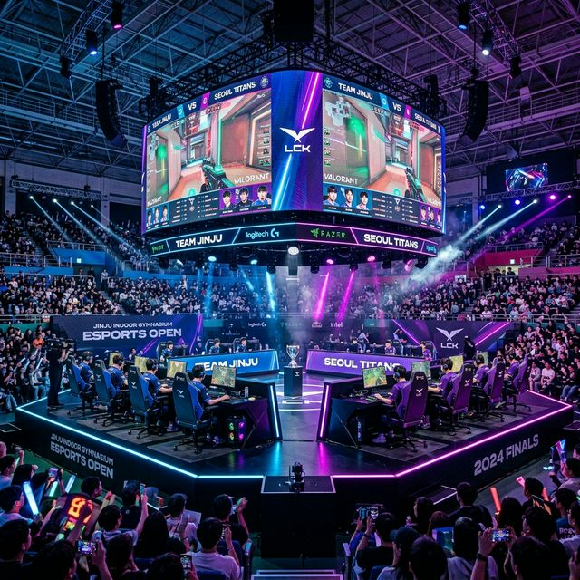
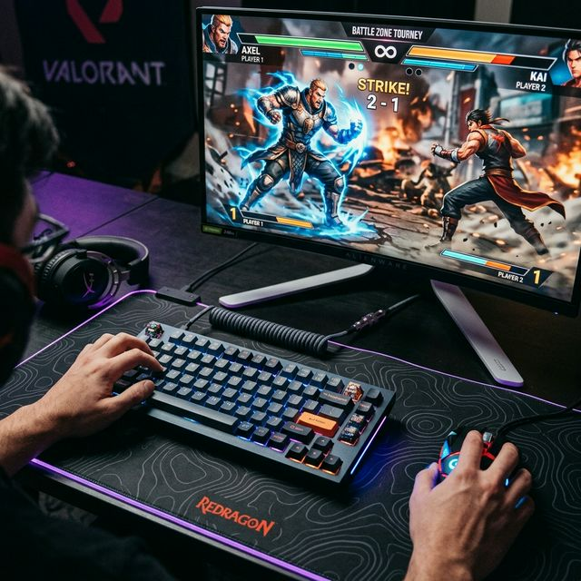
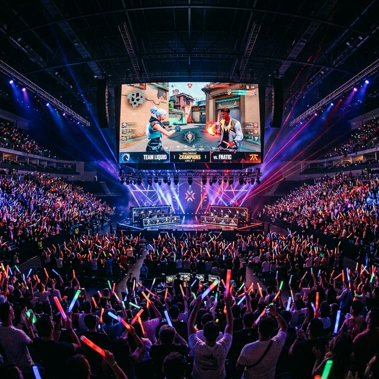

2026 아시아 이스포츠 대회 진주 개최 — 4월 24일 개막 일정 및 주요 종목 관람 포인트 총정리
2026년 4월, 아시아 최고의 게이머들이 경남 진주로 모입니다. 이번 2026 아시아 이스포츠 대회(ECA 2026)는 이스포츠를 매개로
아시아 각국의 문화를 교류하고 미래 산업의 비전을 공유하는 축제의 장입니다. 4월 24일부터 26일까지 진주실내체육관에서 펼쳐지는 이번 대회는 정식 종목 6종과 혁신적인 시범 종목 1종을 포함하여
역대급 규모로 치러집니다. 게임 팬이라면 놓칠 수 없는 현장 관람 팁과 주요 관전 포인트를 상세히 전해 드립니다.
1. 2026 아시아 이스포츠 대회(ECA 2026)의 의의
아시아 지역의 이스포츠 주권을 강화하고 지역 기반의 지속 가능한 생태계를 구축하기 위해 마련된 ECA 2026은 올해 경남 진주에서 그 화려한 막을 올립니다. 이번 대회는 단순한
승패를 넘어 디지털 시대의 새로운 스포츠 정신을 조명하며, 아시아 각국의 우수 선수들이 국가의 명예를 걸고 맞붙는 정상급 매치업을 제공합니다.
경상남도와 진주시는 이번 대회를 통해 명실상부한 '이스포츠 성지'로 거듭나겠다는 포부입니다. 특히 기존의 수도권 편중 현상에서 벗어나 지역 내 이스포츠 인프라를 확장하고, 관련 산업 인력을 양성하는 교두보
역할을 하게 될 것입니다. 현장을 찾는 팬들에게는 최첨단 방송 시스템과 화려한 무대 연출을 통해 온라인 중계로는 느낄 수 없는 현장의 전율을 선사할 예정입니다.

최첨단 LED 시스템과 화려한 조명으로 꾸며진 ECA 2026 메인 스테이지 전경 / AI 제작 이미지
2. 대회 개요: 일정, 장소 및 입장 안내
대회는 2026년 4월 24일(금)부터 4월 26일(일)까지 총 3일간 집중적으로 운영됩니다. 금요일에는 개막식과 함께 각 종목별 예선전이 펼쳐지며, 토요일과 일요일에는 전 세계
팬들의 이목이 집중되는 대망의 준결승 및 결승전이 치러집니다. 모든 경기는 진주 시민과 방문객들의 접근성이 뛰어난 진주실내체육관 메인 아레나에서 진행됩니다.
가장 반가운 소식은 이번 대회가 전 경기 무료 관람으로 운영된다는 점입니다. 별도의 예매 절차 없이 현장 선착순으로 입장이 가능하여 누구나 부담 없이 세계적인 경기를 직접 지켜볼
수 있습니다. 다만, 결승전이 예정된 주말에는 조기 만석이 예상되므로 경기 시작 최소 1~2시간 전에는 경기장에 도착하여 좌석을 확보하시는 것이 좋습니다.
3. 배틀로얄 & MOBA의 정점: 배틀그라운드 모바일 및 이터널 리턴
ECA 2026의 메인 이벤트를 장식할 첫 번째 그룹은 서바이벌의 묘미를 극대화한 배틀그라운드 모바일입니다. 아시아 전역에서 탄탄한 팬덤을 보유한 종목인 만큼, 전략적인 전술과
정교한 사격술이 어우러진 긴장감 넘치는 경기가 예상됩니다. 선수들의 손가락 하나하나가 만들어내는 기적 같은 플레이를 대형 스크린을 통해 생생하게 감상할 수 있습니다.
동시에 한국형 배틀로얄 게임의 자존심, 이터널 리턴 또한 정식 종목으로 채택되었습니다. 쿼터뷰 방식의 독특한 시점과 캐릭터 간의 상성을 이용한 복합적인 전투가 관전 포인트입니다.
특히 팀 단위의 협동이 중요한 종목인 만큼, 선수들 간의 보이스 오더와 즉각적인 반응 속도가 승패를 가르는 결정적인 요소가 될 것입니다.
4. 격투 게임 매니아를 위한 라인업: 철권 8 및 스트리트 파이터 6
'보는 게임'의 진수를 보여줄 격투 게임 종목들도 기대를 모읍니다. 최근 출시된 철권 8(TEKKEN 8)은 더욱 화려해진 그래픽과 히트
시스템(Heat System)을 통해 역생적인 타격감을 선사합니다. 찰나의 순간에 이루어지는 심리전과 콤보 공격은 현장 관객들의 함성을 끌어내기에 충분한 박동감을 제공할 것입니다.
격투 게임의 고전이자 현재진행형인 스트리트 파이터 6(SF6) 역시 최고 수준의 선수들이 출전합니다. 드라이브 시스템을 활용한 자원 관리와 정교한 대공기 대응 등 고수들의
영역에서 펼쳐지는 정교한 공방전은 이스포츠의 매력을 가장 직관적으로 보여줄 것입니다. 여기에 격투계의 명작 더 킹 오브 파이터즈 XV까지 더해져 그야말로 격투 게임 축제가
완성됩니다.

찰나의 승부를 가르는 최고 사양의 게이밍 기어와 대전 액션 게임 세팅 / AI 제작 이미지
5. 스포츠와 AI의 만남: 이풋볼 및 스테핀(STEPIN)
축구 게임 팬들을 위한 이풋볼(eFootball) 시리즈는 PC와 모바일을 넘나드는 크로스 플랫폼 경쟁으로 치러집니다. 실제 축구 전술만큼이나 정교한 조작과 전술 설정이 돋보이는
경기로, 축구 매니아들에게 색다른 즐거움을 줄 것입니다. 아시아 각국 리거들의 자존심 대결이 피치 위가 아닌 모니터 안에서 뜨겁게 달궈질 예정입니다.
이번 대회에서 특히 주목해야 할 종목은 시범 종목인 스테핀(STEPIN)입니다. K-팝 댄스 AI 플랫폼을 활용한 이 종목은 참가자가 화면 앞의 동작을 따라 하면 AI가 이를
정밀하게 분석하여 점수를 산정하는 방식입니다. 정통적인 게이밍을 넘어 신체 활동과 기술이 결합된 차세대 이스포츠의 비전을 확인할 수 있는 기회가 될 것입니다.
6. 현장 팬 존(Fan Zone) 및 체험 부스 운영
대회가 열리는 진주실내체육관 외부와 로비에는 관람객들을 위한 다양한 부대 행사가 마련됩니다. 주요 게임사들의 신작 체험 존은 물론, 프로 선수들과의 사인회, 코스튬 플레이어들과의
포토 타임 등 다채로운 이벤트가 준비되어 있습니다. 경기를 기다리는 시간 동안에도 지루할 틈 없이 다양한 콘텐츠를 즐길 수 있습니다.
또한 지역 특산물을 활용한 푸드트럭 존과 이스포츠 굿즈 샵도 운영됩니다. 진주의 로컬 감성과 이스포츠의 트렌디함이 만나는 공간에서 특별한 추억을 남길 수 있습니다. 특히 가족 단위 방문객을 위해 아이들이
이스포츠의 기초를 배워볼 수 있는 원데이 클래스 프로그램도 마련되어 있어 교육적인 의미까지 더했습니다.
7. 온라인 생중계 및 시청 안내 (SOOP)
현장을 찾지 못하는 팬들을 위해 글로벌 중계 시스템도 완벽히 구축되었습니다. 국내 최고의 스트리밍 플랫폼인 SOOP(구 아프리카TV)을 통해 전 경기가 고화질로 생중계됩니다.
전문 해설진의 깊이 있는 분석과 입담이 더해진 중계방송은 경기 상황을 더욱 흥미진진하게 전달해 줄 것입니다.
온라인 시청자들을 위한 실시간 승부 예측 이벤트와 드롭스 보상도 풍성하게 준비되어 있습니다. 스마트폰이나 PC만 있다면 언제 어디서나 ECA 2026의 열기를 함께 느낄 수
있습니다. 공식 채널을 미리 구독하고 알림 설정을 해두시면 각 종목별 주요 경기 일정을 놓치지 않고 챙기실 수 있습니다.
8. 교통 및 주차 안내: 진주실내체육관 가는 법
진주실내체육관은 진주역과 진주 터미널에서 대중교통으로 쉽게 이동할 수 있는 위치에 있습니다. 축제 기간에는 경기장 인근의 혼잡이 예상되므로 가급적 대중교통 이용을 권장합니다.
시내버스 노선이 잘 갖춰져 있으며, 외지에서 오시는 분들은 진주역에서 택시를 이용할 경우 약 15~20분 내외로 도착이 가능합니다.
차량을 이용하시는 경우 체육관 내 주차장을 이용할 수 있으나, 대회 규모에 비해 주차 공간이 협소할 수 있습니다. 만차 시 인근의 공영 주차장이나 임시 주차장 안내를 따르시기
바랍니다. 4월의 쾌적한 날씨 속에 경기장 주변 남강 산책로를 따라 걸어서 접근하는 것도 진주의 봄을 만끽하는 좋은 방법이 될 것입니다.

국가대표 선수를 응원하는 팬들의 열띤 응원 열기로 가득 찬 경기장 내부 / AI 제작 이미지
9. 대회와 연계한 진주 봄 나들이 코스 추천
경기를 전후로 진주의 아름다운 명소를 둘러보는 것도 추천합니다. 진주성은 체육관에서 그리 멀지 않은 곳에 위치하여 역사의 숨결을 느끼기에 최적입니다. 특히 남강 위에 떠 있는
촉석루와 의암은 진주 여행의 필수 코스입니다. 밤에는 남강 유등의 은은한 불빛이 더해져 환상적인 분위기를 연출합니다.
진주의 별미인 진주냉면과 진주비빔밥도 꼭 맛보시기 바랍니다. 잘게 썬 육전이 올라간 진주냉면은 경기의 긴장감을 한 방에 날려줄 시원함을 선사합니다. 이스포츠 열기와 함께 진주의
맛과 멋을 동시에 챙기는 완벽한 1박 2일 여행을 계획해 보시기 바랍니다.
#2026아시아이스포츠대회
#ECA2026
#진주이스포츠
#배틀그라운드모바일
#철권8
#진주실내체육관
#이터널리턴
#무료관람축제
#진주가볼만한곳
#이스포츠중계